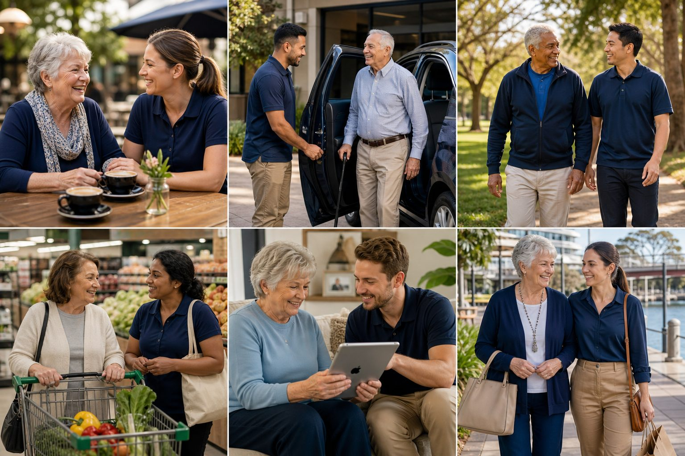

Aged care support
Stay active, connected and independent
Friendly, dependable support that makes everyday life easier while keeping your choices and routines at the centre.
Support that fits your life
How we can help
Practical companionship and assistance shaped around what matters to you.

Companionship & outings
Coffee catch-ups, social activities and enjoyable time in the community.
Transport & appointments
Comfortable transport for appointments, shopping and local activities.
Active living & personal training
Encouragement to keep moving, stay involved and enjoy favourite activities.
Shopping & daily living
Friendly support with everyday errands and practical tasks.
Home cleaning support
Essential light cleaning and household routines shaped around your needs.
Technology support
Patient help with phones, tablets, email and online services.
Community connection
Respectful support that helps you stay involved and keep doing things your way.
Personal car washing
Practical assistance available privately or where approved in your arrangements.
Let’s talk
Tell us what support would make life easier
Call, SMS or send an enquiry for a friendly conversation.